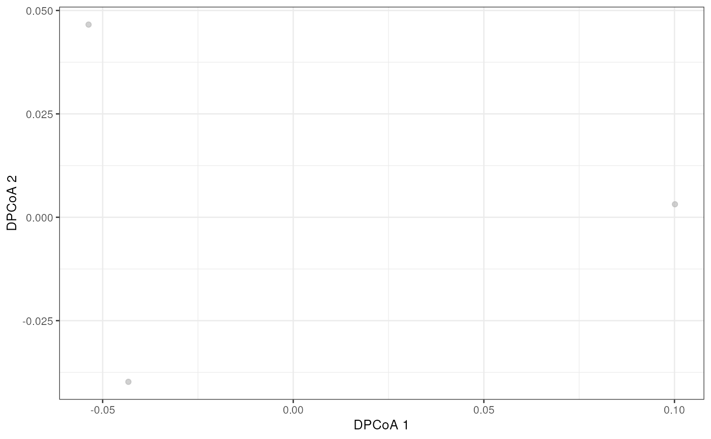

Double Principal Correspondance analysis is made available via the
ade4 package in typical fashion. Results are stored in the
reducedDims and are available for all the expected functions.
getDPCoA(x, y, ...)
# S4 method for class 'ANY,ANY'
getDPCoA(
x,
y,
ncomponents = 2,
ntop = NULL,
subset.row = subset_row,
subset_row = NULL,
scale = FALSE,
transposed = FALSE,
...
)
# S4 method for class 'TreeSummarizedExperiment,missing'
getDPCoA(
x,
...,
assay.type = assay_name,
assay_name = exprs_values,
exprs_values = "counts",
tree.name = tree_name,
tree_name = "phylo"
)
calculateDPCoA(x, ...)
addDPCoA(x, ..., altexp = NULL, name = "DPCoA")
runDPCoA(x, ...)For getDPCoA, a numeric matrix of expression values
where rows are features and columns are cells.
Alternatively, a TreeSummarizedExperiment containing such a matrix.
For addDPCoA a TreeSummarizedExperiment containing the
expression values as well as a rowTree to calculate y using
cophenetic.phylo.
a dist or a symmetric matrix compatible with
ade4:dpcoa
Currently not used.
Numeric scalar indicating the number of DPCoA dimensions to obtain.
Numeric scalar specifying the number of features with the highest
variances to use for dimensionality reduction. Alternatively NULL,
if all features should be used. (default: ntop = NULL)
Vector specifying the subset of features to use for dimensionality reduction. This can be a character vector of row names, an integer vector of row indices or a logical vector.
Deprecated. Use subset.row instead.
Logical scalar, should the expression values be standardized?
Logical scalar, is x transposed with cells in rows?
a single character value for specifying which
assay to use for calculation.
a single character value for specifying which
assay to use for calculation.
(Please use assay.type instead. At some point assay_name
will be disabled.)
a single character value for specifying which
assay to use for calculation.
(Please use assay.type instead.)
a single character value for specifying which
rowTree will be used in calculation.
(By default: tree.name = "phylo")
Deprecated. Use tree.name instead.
String or integer scalar specifying an alternative experiment containing the input data.
String specifying the name to be used to store the result in the reducedDims of the output.
For getDPCoA a matrix with samples as rows and CCA dimensions as
columns
For addDPCoA a modified x with the results stored in
reducedDim as the given name
In addition to the reduced dimension on the features, the reduced dimension
for samples are returned as well as sample_red attribute.
eig, feature_weights and sample_weights are
returned as attributes as well.
data(esophagus)
dpcoa <- getDPCoA(esophagus)
head(dpcoa)
#> [,1] [,2]
#> B -0.05368615 0.046589779
#> C -0.04324591 -0.039790060
#> D 0.10011870 0.003144932
esophagus <- addDPCoA(esophagus)
reducedDims(esophagus)
#> List of length 1
#> names(1): DPCoA
library(scater)
plotReducedDim(esophagus, "DPCoA")
